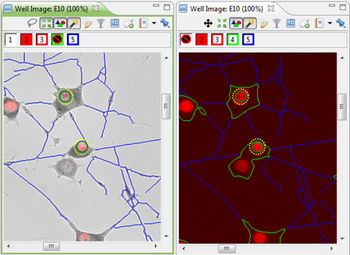
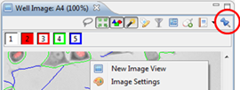
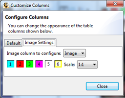
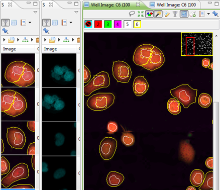

You can open multiple Well Image views on the sam well. These views will be automatically linked. A selected cell in one view will also be selected in the other. The position within the image and zoom factor are always the same: if you scroll or zoom in one of the views, the others will adapt accordingly.

If you want a certain view to remain unchanged, you can pin it so it won't receive changes from the other views:

To have a clear overview of the images and data of individual cells, open a Subwell Data View. This can be done by right-clicking on the Heatmap and selecting Browse Subwell Data. You can also open the view from the Toolbar, using Show Views > Subwell data.
A Subwell Data View will give you information per cell. If you select cells in an image viewer, they will also be selected in the Subwell Data View and the other way around.
You can adjust the images that you see in the Subwell Data View by right-clicking and selecting Configure Columns. This will show a popup-window:

You can select the layers you would like to view and the scale of the images.
